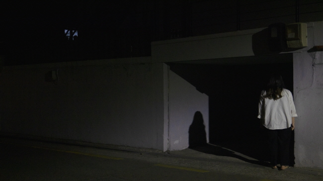

목차
일기장/ 권세주🦋
흑임자 서리/ 쓸모🌏
티엠아이 남발하는 정씨의 이야기 - "바람"편/ 정씨🍊
사건이 가져온 평화로운 일상의 파괴 : 브로드처치 (2013)/ 파리🎞
편집자의 말
2주 만에 또 뵙네요!
3월에 시작했던 녹두ZINE은 이제 마지막 발행만 남겨두고 있어요.
약속했던 대로 5월 22일을 마지막으로 잠시 쉬어가기로 했답니다.
마지막 녹두ZINE도 열심히 준비하고 있을게요.
날씨가 많이 더워졌어요.
이 편지에 바람을 가득 담았는데, 조금 시원한 느낌이 드려나 모르겠어요!

[일기장]
큰 고민에 빠졌다.
나는 제대로 바람났다.
현실과 가상의 세계에서 그 경계선을 제대로 찾지 못했다는 생각에 절망했다.
내가 너무 이상주의자로 살아왔던 것일까?
너무 크게 틀어놓은 음악 때문이라고 핑계라도 대고 싶다.
모두가 나무란다. 들리지 않는 가시적 비판. 불필요한 자기 혐오.
숨기기 급급한 요즘이다.
들키지 않아야 한다는 각박증에 마른 침이 넘어가지 않을 때가 종종 있을 정도다.
가까운 이의 비난은 성벽을 쉽게 무너트린다.
여기서 난 비난이라고 했지만, 그들 눈에는 난 제대로 바람났다고 보겠지.
갑자기 이런 말을 하고 싶다.
“사랑에 빠진 게 죄는 아니잖아!”
(난 절대 love를 말하는 게 아니다..!)
권세주
세주의 한 페이지
2020.05.03. 일기장에서
흑임자 서리
한국 계절은 그라데이션이라는 게 없다는 글을 읽고 웃음이 나왔다. 분명 5월이 시작된 지 얼마 안 되었는데, 후드티 한 장만 걸쳐도 땀이 주룩주룩 흘러내렸다. 저번 주에는 친구들과의 약속 장소를 가는데, 끝없는 오르막길에 온몸이 녹아내리는 것 같았다. 시간이 조금 남아 근처 카페에 들렀다. 한쪽 벽이 뻥 뚫린 창문으로 되어 있었고, 공간은 땅속으로 반쯤 잠긴 듯한 모양이었다. 그러니까 반지하 건물이었는데 발을 딛자마자 넓은 동굴 속에 들어간 듯 시원했다. 가장 넓은 테이블에 짐을 늘어놓고, 밖에서 시원하게 불어오는 바람 냄새를 맡으며 잠시 숨을 골랐다.
메뉴를 찬찬히 훑어보는데, 익숙한 이름이 보였다. ‘서리..?’ 얼마 전 SNS에서 채식주의자를 위한, 우유, 유지방, 인공색소가 없는 아이스크림을 판매하는 단체를 봤었는데, 알고 보니 그 아이스크림을 이 작고 귀여운 동굴 같은 카페에서 판매하고 있었다. 작고 귀여운 동굴 속에는 노트북으로 작업하는 단 2사람만이 앉아있었는데, 그래서 더욱 비밀스러운 다람쥐 굴을 찾아낸 것 같았다. ‘콘에 주세요…아 아니…커..컵에 주세요! 아니 콘에.. 아니 컵에..!’ 둘 다 맛있을 것이 분명한데 그중 하나를 고르라는 건 가혹했다.
‘흑임자 서리’로 불리는 회색빛의 촉촉하고 반짝거리는 서리가 깨끗한 컵에 또아리를 트고 있었다. 흑임자는 검은 참깨를 한방에서 이르는 말이라고 한다. 중국에서는 흑임자를 불로장수의 식품으로 여겼다고도 하는데, 과연 그 명성에 걸맞게 입안으로 은은한 향이 퍼졌다. 쫀득보다는 부드러운 쪽에 속했다. 고소한 맛 뒤에 은은한 단맛이 있었다. 풍요롭고 시원한 맛이다. 담백하고 깔끔하다. 서리 위에 콩가루로 추정되는 가루는 부드럽게 서리와 어우러졌다. 숟가락을 몇 번 뜨고 나니 금세 시원해졌다. 마침 새소년의 파도가 흘러나오고 있었다. 박자를 맞추면서 남은 서리를 남김없이 떠먹었다. 혀의 돌기 하나하나가 흑임자 서리 위에서 파도타기를 했다.
특히 서리는 한 컵 가득 비운 사람의 마음을 풍요롭게 했다. 입안 곳곳을 진득하게 만들어버리는 아이스크림과 달리, 시원한 바람이 훑고 지나간 듯 시원하게 담백했다. 마음에 불어온 서리 바람은 푸릇한 풀밭 위에 누워있는 나를 다독이 듯 부드러웠다.
김쓸모
다음 번엔 녹차 서리 도전!
티엠아이 남발하는 정씨의 이야기 - "바람"
추위가 가시고 그리웠던 따스한 햇빛이 다시금 모습을 드러내는 봄.
생기를 찾은 세상이 나를 꼭 껴안아 주는 듯한
봄만의 포근한 바람이 좋다.
숨을 죄여오는 듯한 열기와 습기로 가득 차 피할 곳 없는 여름.
사막에서 오아시스를 찾으면 이런 느낌일까 상상하게 만드는,
맺혀 있는 땀방울들을 날려 보내기에 충분하게 느껴지는
드문 여름 바람이 좋다.
끝나지 않을 것 같던 더위가 끝나고
머리 바로 위에 떠 있던 해가 어느덧 저 멀리서 나를 비추고 있는 가을.
온 몸을 스쳐가는 바람에 몸을 살짝 웅크리게 만드는
가을의 서늘한 바람이 좋다.
모두가 자신의 몸을 감춘 채 하얀 땅 위 발자국 만을 남기는 겨울.
한껏 웅크린 내 몸의 따뜻한 온기를 느끼게 해주는
한겨울의 시린 바람이 좋다.
누구에게나 스쳐가는 바람에 내 머리칼이 날릴 때면
이 바람에 걱정과 고민을 실어 흘러 보내리라 생각한다.
내 곁에 잠시 머물다 갈 뿐이지만
내 향기를 가득 안은 채
내 소망을 가득 품은 채
내 걱정을 가득 실은 채
한껏 무거워진 몸을 이끌고 흘러간다.
정씨
산문. 지극히 개인적이고 주관적인 이야기를 합니다.
사건이 가져온 평화로운 일상의 파괴 :
브로드처치 (2013)
이번 주제인 바람을 듣고 떠오른 드라마는 아이러니 하게도 “브로드처치”라는 영국 수사
드라마입니다.
영국 드라마를 좋아하시는 분들이라면 이미 이 드라마를 보신 분들도 계실 거 같습니다. 브로드처치는 해안가의 절벽에서 어린아이의 사체가 발견되고 그것의 범인을 브로드처치라
는 마을 안에서 추적해가는 수사 드라마입니다. 사실 이 드라마에서 강조하는 부분은 수사
를 하는 와중에서 범인을 추적해가는 스릴과 추리가 아닌 하나의 사건이 가족들에게 파장을
일으키는 부분을 강조합니다.
따라서 사건 현장의 모습을 보여주며 추리해가는 과정보다 사건이 일어난 이후 지내는 마
을 주민들의 모습과 평화로운 일상 속에서 숨기고 있었던 각자의 사정들이 사건을 겪고 나
서 낱낱이 까발려지게 되는 그리고 그것들이 몰고 오는 파장을 잘 보여줍니다.
평화롭던 브로드처치의 주민들은 대니의 시체가 발견되면서 그 평화가 깨져버립니다. 주민
들은 각자의 사정이 있고 그 사실을 드러내기를 꺼려하며 수사에 적극적으로 협조하지 않는
모습 또한 보입니다. 특히 대니의 아버지 마크는 진술한 것과 맞지 않는 알리바이 때문에
형사의 의심을 사게 됐는데 중간에 밝혀지는 마크의 바람 사실이 그렇게나 충격적이었습니
다. 자신이 아들의 살인자로 몰리면서 까지 드러내고 싶지 않아했던 진실이 바람이라는 것
에 적지 않게 놀랐습니다.
그리고 이런 마크의 바람에 대한 소식은 그의 아내 베티한테까지 전해지게 되고 이 사실은
이미 대니의 죽음으로 인해 불안했던 라티머 가정에게 큰 혼란과 충격을 안겨줍니다. 그리
고 이 바람에 대한 사실은 브로드처치 시즌1부터 시즌3에 아우르기까지 언급이 되고 풀어
가는데 그만큼 가정에서의 바람을 단순히 다룬 것이 아닌 얼마나 신뢰를 깨버리는 행위이며
또한 이전으로 아무 일도 없던 거처럼 살아갈 수 없다는 메시지를 잘 다뤘다고 생각합니다.
물론 이 드라마가 수사 드라마인 만큼 큰 주제로 다루고 있지는 않지만 시즌1에서 3까지
라티머 가정을 보여주며 다루는 모습을 보면 제작진들이 많은 신경과 공을 들였다는 것을
알 수 있었습니다.
마크의 바람과 대니를 죽인 범인은 비밀과 깊게 관련되어 있습니다. 알려지고 싶지 않아했
던 사실이 존재했고 그것이 라티머 가정에게 큰 충격과 비극을 몰고 온 것을 생각하면 바람
또한 가정에 있어서는 살인과도 같은 행위가 아니었나 싶습니다. 적어도 아내인 베티에게는
커다란 상처를 안겨주었습니다.
사건이 평화로운 일상에 어떻게 침투하는지, 얼마나 충격적인지에 대해 잘 다룬 드라마;
브로드처치를 바람이라는 주제에 맞춰 소개해 드렸습니다. 주로 보는 시청자가 제 3자가 되
어 범인을 추적하는 형태가 많은 수사 드라마들과 달리 내가 그 마을의 사건에 속하게 되는
느낌을 주는 브로드처치는 흡입력이 뛰어나고 많은 생각을 하게 만듭니다. 브로드처치는 넷
플릭스에서 감상하실 수 있습니다. 이상으로 파리는 비행을 마치고 다음 비디오 여행을 준
비할게요!
파리
파리의 많은 눈으로 더 다양한 작품들과 만나보고 싶습니다.
제작노트
편집*디자인/ 김쓸모(jpg0221@naver.com)
필진/ 권세주, 김쓸모, 정씨, 파리
문의, 제안, 신청, 기타
www.knockduu.com
knockduu@naver.com instagram.com/knockduu/
Based in Seoul ⓒ2019. knockduu All rights reserved